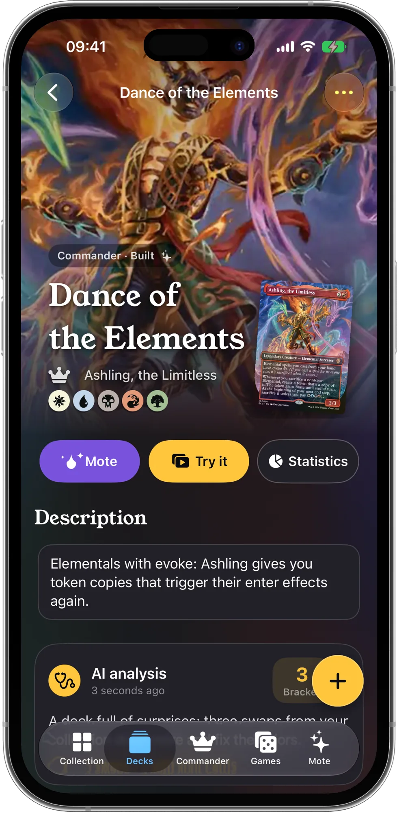

How to build a Commander deck from the cards you already own
Short answer: choose a commander whose colors match the cards you own the most, then fill a 99-card template (roughly 37 lands, 10 ramp, 10 card draw, 10 removal, 2–3 board wipes and about 30 cards for your theme) using your collection first. Only then list the handful of cards you're missing.
The rules your deck has to follow
- 100 cards exactly, commander included.
- Singleton: one copy of each card, except basic lands.
- Color identity: every card's mana symbols must be within your commander's colors.
- The commander is a legendary creature (or a card that says it can be your commander) and starts in the command zone.
A template that works for most decks
| Role | Cards | What to look for in your collection |
|---|---|---|
| Lands | 36–38 | Basics plus any dual and utility lands in your colors. |
| Ramp | ~10 | Mana rocks, land-search spells, mana creatures. |
| Card draw | ~10 | Anything that draws more than one card over time. |
| Targeted removal | 8–10 | Answers to a creature, artifact or enchantment. |
| Board wipes | 2–3 | Resets for when you fall behind. |
| Theme | ~30 | Cards that do what your commander wants. |
Treat it as a starting point: an aggressive deck can trade some draw for threats, a deck with a cheap curve can run fewer lands.
Step by step
- Take stock by color. Count your playable rares and good uncommons per color. The color pair (or trio) with the most is your shortlist.
- Pick a commander in those colors that does something clear on its own: makes tokens, rewards attacking, grows counters, recurs creatures. Not sure? See how to choose a commander.
- Start with the lands, then ramp, draw and removal. These slots win more games than flashy cards.
- Fill the theme with cards that work with your commander, favoring cheap ones.
- Cut down to 99. Remove the most expensive cards that don't do anything the turn they land.
- Check the curve. Most cards should cost 2–4 mana. More on this in how many lands in a Commander deck.
- Draw sample hands. Shuffle and draw 7 a few times: do you have lands and something to do by turn 3?
- Agree on power level. Tell your playgroup what to expect: the official Commander brackets are a quick shared language for it.
- Only now, list what's missing and decide whether to buy it.
How to do it with ManaPal
- Add your cards to the collection (scan or import).
- Open Mote and choose Build me a deck with my cards. Pick a commander, or find one first with Find the right Commander for you.
- Check the Mana cost shown before you confirm: Mote then builds a 100-card deck, using the cards you already own first.
- Open the deck: Statistics shows lands, curve, % of cards owned and what the missing ones cost.
- Tap Try it to draw opening hands and playtest.
- Run an AI analysis for swaps taken from your collection, and buy only the cards you still need.

FAQ
How much does it cost to have Mote build a deck?
"Build me a deck with my cards" is an AI action paid with Mana, ManaPal's AI currency. The app shows the cost before it starts and gives the Mana back if the action fails. Mana comes with Mana packs or ManaPal Pro.
Can I build a deck without the AI?
Yes. Creating decks by hand, importing them and using the deck statistics are free. Up to 7 built decks are free; ManaPal Pro unlocks unlimited decks.
What if I'm missing a few cards?
ManaPal lists the missing cards with their total price and opens a store with them ready to add to your cart, or you can proxy them for casual games if your playgroup agrees.